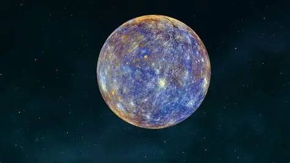
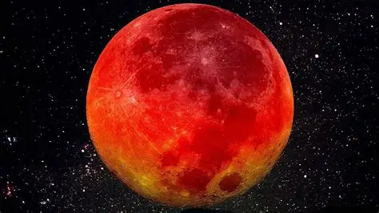
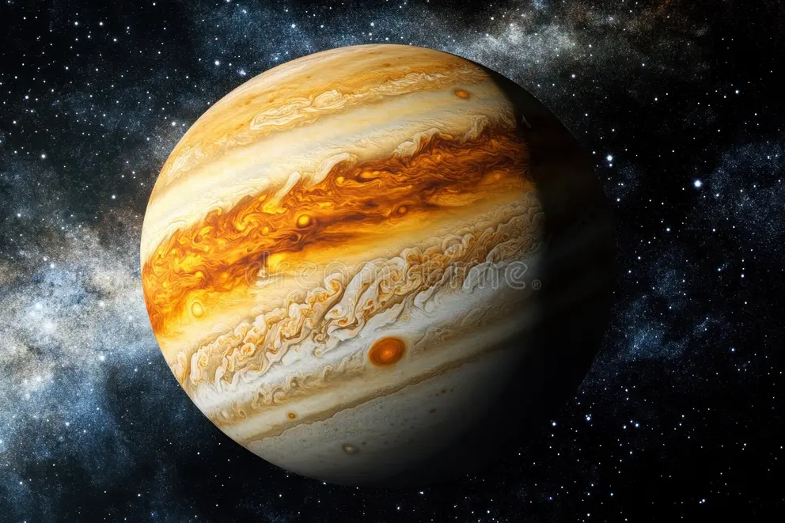
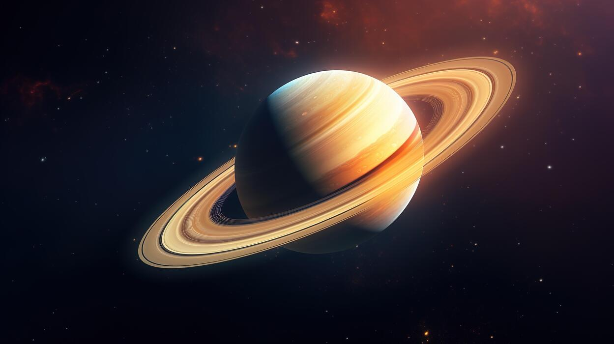
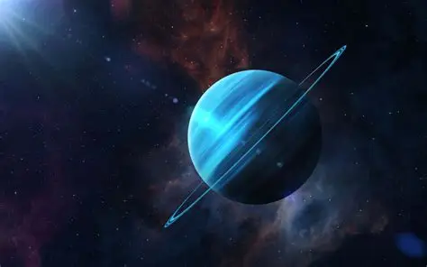
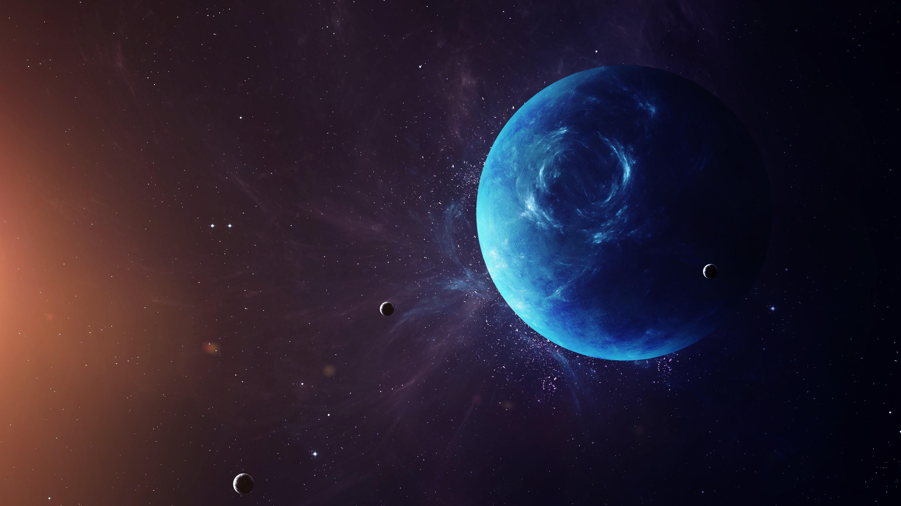

Mercury is the smallest planet on the solar system.It is the closest planet to the sun.
It has rocky surface and very little athmosphere.It is the hottest planet.
It has 0 moons

VENUSis the hottest planet in solar system.It has thick athmosphere and is covered by clouds o f sulphuric acid
It also have zero moons

EARTHis the third planet from sun. It is the only known planet to support life.It has liquid water covering much og it surface
Earth has one moon

MARSis known as RED PLANETbecause of iron mimerals on its surface. It has mountains ,valleys,and polar ice caps.
Mars has two moons

Jupiteris the largest planet in the solar system.It si a gas giant famous famous for its GREAT RED SPOTa huge storm.
Jupiter has 95 moons

Saturn is gas giant best known for its beautiful system of rings.It has many moons and is second largest planet.
Saturn has the most moons it has 274 moons

Uranus is a ice gintwith a blue green color caused by methane in its athmosphere.It rotates on its side compared with most planet .
Uranus has 28 moons

Neptunr is the farthest planet from sun.It is an ice giant with a deep blue appearance and extremely strong winds.
Neotune has 16 moons
